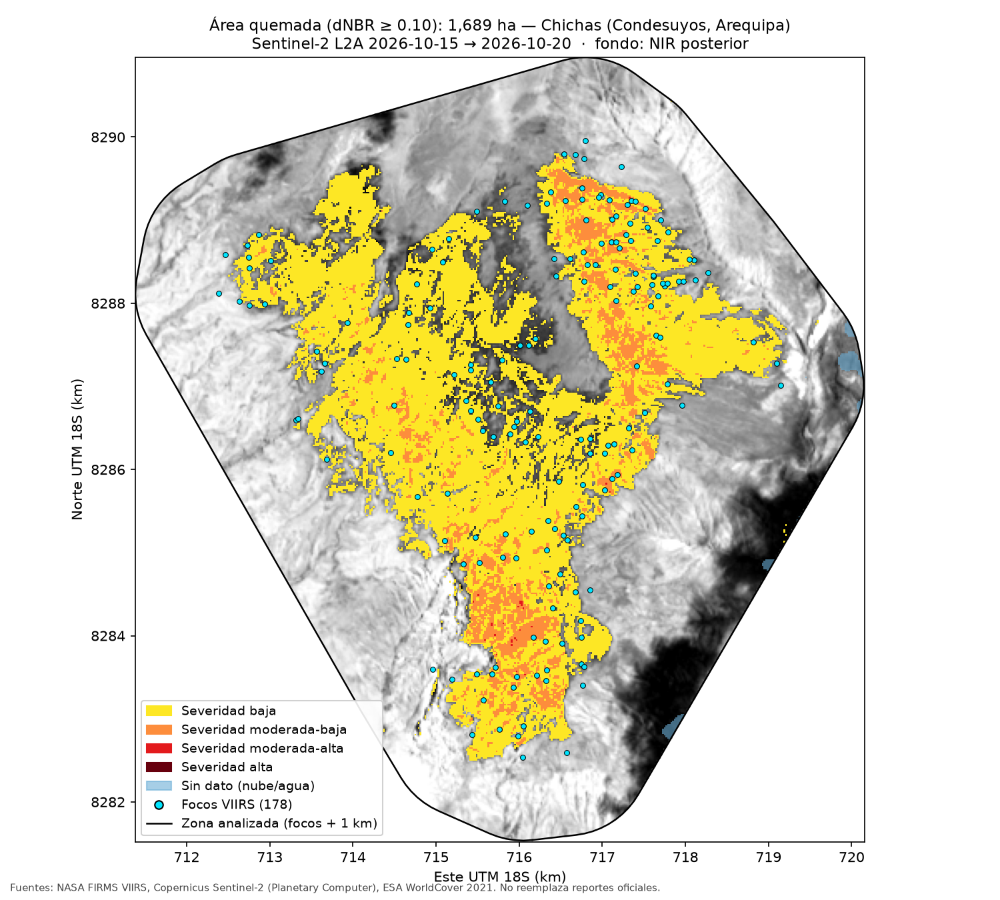

1La pregunta
Los satélites detectan dónde hay fuego, no qué tipo de suelo arde. Esa diferencia decide la política pública. Quemar bosque es conversión de uso de suelo, y se combate con titulación y fiscalización. Quemar pastizal para renovar forraje es manejo ganadero, y se regula con extensión agraria y quema controlada.
Por eso este análisis no se queda en contar focos: mide cuántas hectáreas se quemaron en un incendio concreto y cruza esa superficie con un mapa de cobertura del suelo.
Se quemaron 1 690 ha (dNBR ≥ 0,10), el 31 % de las 5 399 ha analizadas.
El 72,4 % de lo quemado era pastizal; bosque, 0,1 ha; cultivo, cero.
La medición da 43 % menos que lo que sugerían los focos, cuya envolvente apuntaba a 2 957 ha.
2El mapa

3Resultado 1: cuánto se quemó
Dentro de la zona analizada, 1 689,5 ha superan el umbral de quemado. Casi todo es de severidad baja.
| Severidad | Rango dNBR | Hectáreas | % de lo quemado | |
|---|---|---|---|---|
| Baja | 0,10 – 0,27 | 1 447,6 | 85,7 % | |
| Moderada-baja | 0,27 – 0,44 | 240,8 | 14,3 % | |
| Moderada-alta | 0,44 – 0,66 | 1,1 | 0,1 % | |
| Alta | ≥ 0,66 | 0,0 | 0,0 % | |
| Total quemado | ≥ 0,10 | 1 689,5 | 100 % | |
| Sin quemar | < 0,10 | 3 697,0 | — | |
| Sin dato (nube o agua) | — | 12,9 | — |
La severidad puede estar subestimada: en pastizal el dNBR sale bajo, porque hay poca biomasa que perder, y la imagen posterior es de solo dos días después del último foco.
4Resultado 2: qué tipo de suelo ardió
Las hectáreas quemadas, cruzadas con ESA WorldCover 2021:
| Cobertura (WorldCover) | Hectáreas | % de lo quemado | |
|---|---|---|---|
| Pastizal | 1 223,0 | 72,4 % | |
| Matorral | 455,6 | 27,0 % | |
| Suelo desnudo | 10,3 | 0,6 % | |
| Agua | 0,4 | 0,0 % | |
| Bosque | 0,1 | 0,0 % | |
| Cultivo | 0,0 | 0,0 % | |
| Total | 1 689,4 | 100 % |
El total difiere en 0,1 ha del de la tabla de severidad por el redondeo de cada clase.
Cero hectáreas de cultivo y una décima de bosque. No hubo deforestación ni pérdida de cosecha: el daño es pérdida de forraje y el afectado es la ganadería extensiva.
Que ardiera pastizal no dice por sí solo si fue una quema de manejo o un accidente. La recurrencia interanual (sección 7) sugiere lo segundo: la zona no había ardido en 14 años.
5Resultado 3: los focos sobrestiman
La envolvente de los 178 focos cubría 2 957 ha. La medición con Sentinel-2 da 1 689,5 ha: 43 % menos.
Un foco VIIRS marca un píxel de 375 m (unas 14 ha) donde el satélite detectó calor, pero dentro de ese píxel puede arder solo una fracción. Por eso, estimar el daño contando focos o dibujando el área que los rodea infla el resultado. Para saber cuánto se quemó hay que medir la cicatriz con una imagen de mayor resolución.
En los otros tres incendios que se pudieron medir, la dirección se repite en dos (−64,7 % y −35,6 %) y no en el tercero (+3,9 %): la sobrestimación es frecuente pero no un factor fijo (sección 8).
6Cuánto depende del umbral
Con el corte estándar de 0,10 el área quemada es de 1 690 ha. Pero la cifra es muy elástica: entre 0,05 y 0,35 va de 2 008 ha a 34 ha, un factor de 59.
| Umbral dNBR | Hectáreas quemadas | % de la zona |
|---|---|---|
| 0,05 | 2 007,5 | 37,2 % |
| 0,08 | 1 842,9 | 34,1 % |
| 0,10usado | 1 689,5 | 31,3 % |
| 0,15 | 1 168,9 | 21,6 % |
| 0,20 | 686,6 | 12,7 % |
| 0,27 | 241,9 | 4,5 % |
| 0,35 | 33,9 | 0,6 % |
La razón es que el incendio fue de baja severidad y sus píxeles se concentran cerca del umbral: moverlo un poco cambia mucho cuántos quedan de cada lado. Si hubiera sido un incendio forestal intenso, con píxeles muy por encima de 0,27, la curva sería plana.
La escala de Key y Benson se calibró sobre incendios forestales. En pastizal casi todo cae en la banda baja, así que la elección del umbral pesa más que el propio fuego.
La sección 9 compara el umbral con las otras tres decisiones: ninguna lo mueve tanto.
34–2 008 ha no es “el rango del incendio”. Con 0,05 se recogen ruido y cambios que no son fuego (vegetación que se seca, diferencias de iluminación entre fechas); con 0,35 solo quedan los núcleos más calientes.
7¿Arde cada año o fue excepcional?
Si la misma zona ardiera cada temporada seca, el incendio de 2026 sería compatible con una quema de manejo de pastos. Para verlo se contaron los focos del satélite Suomi-NPP de cada año, de 2012 a 2025, dentro del área que ardió en 2026 (1 689,5 ha) y dentro de esa área más 1 km (5 855,2 ha).
Los datos apuntan a un evento excepcional. En 14 años completos, S-NPP no registró ni un foco dentro del área que ardió en 2026. En el anillo de 1 km hubo focos en solo 2 años: 1 en marzo de 2013 y 4 en diciembre de 2018. En 2026, en dos días (17 y 18 de octubre), hubo 44 focos dentro del área y 61 contando el anillo.
Cuánta confianza. Los 14 años (2012–2025) tienen datos utilizables: cada archivo anual trae detecciones en el Perú en 346 a 366 días del año. Con eso se puede afirmar con confianza alta que entre 2012 y 2025 no hubo ahí un incendio del tamaño del de 2026: ese generó 61 focos S-NPP en dos días y uno parecido difícilmente pasaría inadvertido. La confianza es baja para afirmar que la zona nunca se quema: S-NPP pasa sobre el Perú unas dos veces al día, y una quema de pastos pequeña y rápida puede empezar y apagarse entre dos pasadas. El resultado no cambia al incluir los focos de confianza baja: siguen siendo cero dentro del área.
Lectura económica. Una recurrencia alta habría sugerido quema de manejo de pastos: una práctica productiva que renueva el forraje pero genera externalidades (humo, emisiones, riesgo de que el fuego escape). Una recurrencia nula, como la de Chichas, es más compatible con un evento excepcional, es decir, con un daño: forraje que los ganaderos pierden sin haberlo planeado. Es evidencia compatible, no prueba: las quemas pequeñas pueden escapar al satélite, y un evento excepcional también puede ser una quema de manejo que se salió de control.
Cruce con la firma nocturna. Chichas fue muy nocturno: el 56,7 % de sus focos fueron de noche (70,5 % solo con S-NPP), frente al 20,1 % del Perú en la misma semana y una mediana de 34,3 % en los otros 19 del top 20; es el tercero más nocturno de los 20. La lectura «zona de quema habitual donde esta vez el fuego se escapó» exigiría dos cosas: recurrencia alta y firma nocturna. Aquí solo se cumple la segunda. Lo más simple es que un incendio grande siga ardiendo de noche, sin que eso indique una práctica de manejo.
| Año | Focos en el área | Focos en área + 1 km | Días con datos (Perú) |
|---|---|---|---|
| 2012 | 0 | 0 | 346 |
| 2013 | 0 | 1 | 365 |
| 2014 | 0 | 0 | 363 |
| 2015 | 0 | 0 | 365 |
| 2016 | 0 | 0 | 365 |
| 2017 | 0 | 0 | 364 |
| 2018 | 0 | 4 | 365 |
| 2019 | 0 | 0 | 364 |
| 2020 | 0 | 0 | 366 |
| 2021 | 0 | 0 | 365 |
| 2022 | 0 | 0 | 350 |
| 2023 | 0 | 0 | 363 |
| 2024 | 0 | 0 | 346 |
| 2025 | 0 | 0 | 362 |
| 2026* | 44 | 61 | 8 |
Solo se usó Suomi-NPP, que tiene la serie completa desde 2012. Sumar NOAA-20 (desde 2018) y NOAA-21 (desde 2023) inflaría los años recientes solo porque hay más satélites mirando.
8De uno a veinte incendios
Un caso no basta para generalizar. Se corrió exactamente el mismo pipeline (búsqueda del par Sentinel-2, máscara SCL, dNBR, severidad y WorldCover) sobre los 20 incendios con más focos de la semana. Solo 4 de 20 se pudieron medir.
| # | Distrito | Región | Focos | Nocturnos | Envolvente (ha) | Quemado (ha) | Cobertura o motivo |
|---|---|---|---|---|---|---|---|
| 1 | Río Tambo | Amazonía | 279 | 56 % | 3 051 | — | nubes (55,4 %) |
| 2 | Curahuasi | Andes | 201 | 34 % | 3 227 | — | sin pasada |
| 3 | Chichas | Andes | 178 | 57 % | 2 957 | 1 689,5 | pastizal |
| 4 | Callería | Amazonía | 116 | 2 % | 1 530 | — | nubes (47,2 %) |
| 5 | Iparía | Amazonía | 108 | 44 % | 724 | 255,4 | bosque |
| 6 | Huanoquite | Andes | 80 | 51 % | 1 220 | — | nubes (100,0 %) |
| 7 | Nueva Requena | Amazonía | 65 | 32 % | 416 | — | nubes (77,7 %) |
| 8 | Cayna | Andes | 63 | 33 % | 724 | — | nubes (100,0 %) |
| 9 | Mazamari | Amazonía | 62 | 32 % | 793 | — | sin pasada |
| 10 | Palca | Andes | 61 | 16 % | 853 | — | nubes (100,0 %) |
| 11 | San Cristóbal | Andes | 59 | 68 % | 587 | 609,9 | pastizal |
| 12 | Santa Cruz | Amazonía | 50 | 22 % | 560 | — | nubes (100,0 %) |
| 13 | Nueva Requena | Amazonía | 49 | 33 % | 315 | — | prefiltro (18,2 %) |
| 14 | Nueva Requena | Amazonía | 48 | 33 % | 308 | — | nubes (100,0 %) |
| 15 | Curahuasi | Andes | 45 | 38 % | 475 | 306,0 | pastizal |
| 16 | Paracas | Costa | 42 | 52 % | 49 | — | sin pasada |
| 17 | San Juan de Jarpa | Andes | 42 | 0 % | 497 | — | nubes (89,4 %) |
| 18 | Caja | Andes | 39 | 56 % | 181 | — | nubes (47,5 %) |
| 19 | Ayahuanco | Andes | 39 | 67 % | 400 | — | nubes (55,1 %) |
| 20 | Ancahuasi | Andes | 36 | 47 % | 259 | — | nubes (65,7 %) |
Región: Andes si el centro del incendio está a 1 500 m o más; por debajo, Amazonía (o Costa en departamentos sin selva). Entre paréntesis, el % de la zona inválida en la mejor imagen posterior. «Sin pasada»: ningún Sentinel-2 pasó entre el fin del fuego y el 21 de octubre. «Prefiltro»: la imagen tenía más del 80 % de nubes en la escena completa y el pipeline la descarta, aunque la zona estaba limpia en un 81,8 %; es un defecto del pipeline, no de la imagen. Paracas (49 ha de envolvente y 42 focos en 7 días) probablemente es una fuente de calor industrial, no un incendio.
a) ¿Se mide peor en la Amazonía?
| Región | Incendios | Medidos | % medidos | Fallo: nubes | Fallo: sin pasada | Fallo: prefiltro |
|---|---|---|---|---|---|---|
| Amazonía | 8 | 1 | 12,5 % | 5 | 1 | 1 |
| Andes | 11 | 3 | 27,3 % | 7 | 1 | 0 |
| Costa | 1 | 0 | 0,0 % | 0 | 1 | 0 |
En la Amazonía se midió 1 de 8 (12,5 %) y en los Andes 3 de 11 (27,3 %), pero la diferencia no es significativa (Fisher, p = 0,60). Las nubes tumbaron casi la misma proporción en ambas regiones: el 62,5 % de los casos amazónicos y el 63,6 % de los andinos. La hipótesis no se confirma como sesgo regional. Lo que sí aparece es un sesgo de calendario: a mediados de octubre empiezan las lluvias en la selva y en la sierra, y 16 de los 20 incendios más grandes de la semana no se pueden medir. Además, el corte de datos (21 de octubre) dejó a varios incendios con muy pocos días para conseguir una imagen posterior.
b) ¿La severidad depende de la cobertura?
La hipótesis era que en bosque la severidad sale alta y en pastizal casi todo cae en la banda baja. Los datos no la respaldan. El único bosque medible, Iparía, tiene el 57,7 % de lo quemado en severidad moderada o más; San Cristóbal, un pastizal, tiene el 58,9 %. Chichas es el caso atípico, con solo el 14,4 %. Con un bosque y tres pastizales no se pueden comparar distribuciones.
Aunque la hipótesis se cumpliera, no probaría que la escala esté mal calibrada para el pastizal andino: que el pastizal salga «bajo» puede ser exactamente lo que pasa en el terreno. Para probar una mala calibración hace falta severidad medida en campo (CBI). La literatura (sección 11) sí muestra que los umbrales calibrados en bosque no se trasladan sin más a vegetación rala o herbácea.
c) ¿Los focos sobrestiman siempre?
En tres de los cuatro casos la envolvente sobrestima: Iparía −64,7 %, Chichas −42,9 % y Curahuasi −35,6 %. En San Cristóbal la medida supera a la envolvente (+3,9 %). La dirección se repite, pero el tamaño varía de casi cero a casi dos tercios; con cuatro casos no se puede hablar de un factor sistemático.
d) ¿Los incendios nocturnos son más grandes o más severos?
No hay evidencia. Con los cuatro medidos, la correlación de Spearman entre el % de focos nocturnos y el área quemada es 0,60 (p = 0,40) y con el % de severidad moderada o más, 0,40 (p = 0,60). Con los 20 casos y la envolvente como medida de tamaño, la correlación es −0,11 (p = 0,64).
9Robustez
Cuánto mueve cada decisión las hectáreas de Chichas
«La cifra depende de cuatro decisiones» es una advertencia; aquí se mide cuánto pesa cada una, cambiando una por vez y dejando las otras en su valor base.
| Decisión | Opción | Hectáreas | Cambio |
|---|---|---|---|
| Base | 0,10 · mejor par · SCL usada · 1 km | 1 689,5 | — |
| Par de imágenes | 2.ª mejor posterior: 2026-10-20 (17,4 % inválido) | 1 276,7 | −24,4 % |
| Par de imágenes | 2.ª mejor previa: 2026-10-13 (0,0 % inválido) | 1 497,6 | −11,4 % |
| Máscara SCL | SCL permisiva | 1 689,5 | 0,0 % |
| Máscara SCL | SCL estricta | 1 473,4 | −12,8 % |
| Zona | focos + 500 m | 1 688,9 | 0,0 % |
| Zona | focos + 2 km | 1 693,1 | +0,2 % |
- El umbral domina: de 34 a 2 008 ha (sección 6).
- Par de imágenes: la segunda mejor imagen posterior (Sentinel-2B, otra órbita, el mismo 20 de octubre) da 1 276,7 ha, pero tiene el 17,4 % de la zona tapada. Comparadas solo donde ambas son válidas (4 449,8 ha), la diferencia es de 1 353,9 a 1 276,5 ha, un 5,7 % menos.
- Máscara: la permisiva no cambia nada. La estricta quita 216 ha, pero no porque quite nubes: Sentinel-2 marca 178,7 ha de la cicatriz como «zona oscura» (SCL 2) y 37,4 ha como «sin clasificar» (SCL 7). El suelo quemado es oscuro, así que la máscara estricta borra parte del propio incendio. Es un artefacto, no incertidumbre real.
- Zona: prácticamente irrelevante (1 688,9 a 1 693,1 ha), porque la cicatriz queda entera dentro de cualquiera de los tres buffers.
La concentración de focos depende de la unidad (MAUP)
El coeficiente de Gini mide qué tan concentrados están los 8 637 focos. Su valor depende de la unidad espacial elegida y de si se cuentan las unidades sin focos:
| Unidad | Con focos | Gini (solo con focos) | Gini (todas) |
|---|---|---|---|
| distrito | 644 de 1 815 | 0,735 | 0,906 |
| provincia | 180 de 195 | 0,737 | 0,758 |
| grilla 10 × 10 km | 1 588 de 13 464 | 0,609 | 0,954 |
| grilla 10 × 10 km desplazada 5 km | 1 595 de 13 453 | 0,607 | 0,953 |
Según la unidad, el mismo conjunto de focos da un Gini entre 0,607 y 0,954. Cualquier afirmación del tipo «los focos están muy concentrados» tiene que decir con qué unidad y con qué denominador se midió: la concentración depende de la unidad elegida. Desplazar la grilla 5 km casi no la cambia (0,609 frente a 0,607), así que con un tamaño de celda fijo el resultado es estable.
Una versión anterior del análisis reportaba un Gini por distrito de 0,733; con estos datos y la fórmula estándar se obtiene 0,735 (644 distritos con focos). No se pudo reproducir el 0,733.
10Validación contra MCD64A1
MCD64A1, el producto mensual de área quemada de MODIS, todavía no existe para octubre de 2026, así que se validó el método y no este incendio. La regla se fijó antes de ver resultados: se agruparon los focos S-NPP de junio a noviembre de 2024 y 2025, se ordenaron por número de focos y se tomaron los 3 primeros medibles. Las dos cifras se comparan en la misma zona y sobre los mismos píxeles válidos.
| Muestra | n | Razón mediana (nuestro / MCD64A1) | Rango | Chichas corregida (ha) |
|---|---|---|---|---|
| 3 casos (regla fijada) | 3 | 1,048 | 1,016 – 1,198 | 1 612 |
| 21 candidatos medibles | 21 | 1,171 | 0,678 – 2,018 | 1 443 |
| solo pastizal dominante | 1 | 1,171 | 1,171 – 1,171 | 1 443 |
Los 3 casos de la regla son incendios de bosque amazónico de septiembre de 2024. Con ellos, nuestro método da entre 1,6 % y 19,8 % más que MCD64A1 (mediana +4,8 %). Pero tres casos subestiman la dispersión: en los 21 candidatos medibles, obtenidos con la misma regla y sin elegir, la razón va de 0,678 a 2,018, con mediana 1,171 (+17,1 %). Nuestro método tiende a dar más que MCD64A1.
Factor de corrección declarado. Aplicando el sesgo mediano de los 21 casos, Chichas pasaría de 1 690 a 1 443 ha (1 612 ha con los 3 casos de la regla). Se reporta como cifra alternativa y no reemplaza a la principal, por tres razones: casi toda la validación es en bosque amazónico, con un solo pastizal (razón 1,171); MCD64A1 tiene píxeles de 500 m y no es verdad de campo, porque se le escapan quemas pequeñas o fragmentadas; y varios de los 21 candidatos se solapan en el espacio, así que no son independientes.
En septiembre de 2024, 21 de 24 candidatos fueron medibles, frente a 4 de 20 en octubre de 2026. La diferencia refuerza el sesgo de calendario de la sección 8, aunque los de 2024 tenían 20 días para conseguir imagen posterior y los de 2026, como mucho 7.
11Qué dice la literatura
- Key y Benson (2006), FIREMON Landscape Assessment: origen del dNBR y de su calibración con parcelas de campo CBI, con estratos que van de las hierbas a los árboles grandes.
- Miller y Thode (2007), Remote Sensing of Environment: el dNBR mide cambio absoluto; donde hay poca vegetación previa, los umbrales fijos clasifican mal. Proponen el RdNBR.
- Roy, Boschetti y Trigg (2006), IEEE GRSL: evalúan si el NBR es un índice óptimo de severidad, con datos de sabana, bosque boreal y bosque tropical.
- Picotte y Robertson (2011), Int. J. Wildland Fire: con 731 parcelas, la concordancia entre dNBR y severidad de campo varió según el tipo de vegetación.
- Cansler y McKenzie (2012), Remote Sensing: qué tan bien se trasladan los índices y umbrales a una región nueva.
- Lu, He y Tong (2016), Int. J. Wildland Fire: en un pastizal semiárido, con severidad medida en campo, el mejor índice fue el MIRBI, no el NBR.
No se encontró ningún estudio de dNBR con validación de campo en puna o páramo.
12Qué no se pudo hacer
- Medir 16 de los 20 incendios más grandes: 12 por nubes, 3 porque ningún Sentinel-2 pasó antes del corte de datos y 1 por el prefiltro de nubes de escena del propio pipeline.
- Contrastar bosque contra pastizal: solo un bosque fue medible (Iparía), así que la hipótesis de severidad por cobertura quedó sin una prueba real.
- Validar en pastizal andino: 20 de los 21 casos de validación son de bosque amazónico, y MCD64A1 de octubre de 2026 aún no existe.
- Probar mala calibración de Key y Benson: para eso hace falta severidad medida en campo (CBI), que no existe para estos incendios.
- Reproducir el Gini de 0,733: con estos datos sale 0,735.
- Recurrencia completa de 2026: el archivo anual aún no existe, y sin MAP_KEY de FIRMS la barra de 2026 cubre solo 8 días.
- Encontrar literatura andina: no se halló ningún estudio de dNBR con validación de campo en puna o páramo.
13Cómo se eligió el caso
Los 8 637 focos VIIRS de confianza nominal o alta registrados en el Perú entre el 14 y el 21 de octubre de 2026 se agruparon en 2 602 incendios. Estos son los cinco con más focos:
| Distrito | Focos | Fechas (UTC) | Envolvente (ha) | Cobertura dominante |
|---|---|---|---|---|
| Río Tambo, Satipo (Junín)nublado | 279 | 14–17 oct | 3 051 | Bosque (99,6 %) |
| Curahuasi, Abancay (Apurímac) | 201 | 14–20 oct | 3 227 | Pastizal (55,2 %) |
| Chichas, Condesuyos (Arequipa)medido | 178 | 16–18 oct | 2 957 | Pastizal (57,3 %) |
| Callería, Coronel Portillo (Ucayali)sin imagen | 116 | 14–16 oct | 1 530 | Bosque (65,5 %) |
| Iparía, Coronel Portillo (Ucayali) | 108 | 15–16 oct | 724 | Bosque (98,1 %) |
La cobertura dominante es el porcentaje de los focos de cada grupo que caen sobre esa clase de WorldCover.
El candidato preferido era Callería, en la frontera agrícola de Pucallpa, con el 65,5 % de sus focos sobre bosque y asentamientos alrededor. Pero no existe ninguna imagen Sentinel-2 posterior al fuego entre el 17 y el 21 de octubre, y sin imagen “después” no hay dNBR. La regla estaba fijada de antemano, así que se pasó a Chichas.
14Las decisiones declaradas
Este es el par de imágenes elegido. Se evaluaron 12 candidatas: 10 anteriores y 2 posteriores al fuego. Las del tile 18LYJ se descartaron porque el 97,1 % de la zona queda fuera de su cobertura válida.
| Imagen | Fecha | Tile | Nubes en la zona | Nubes en la escena |
|---|---|---|---|---|
| Antes | 15 oct 2026 | 18LYH | 0,0 % | 0,3 % |
| Después | 20 oct 2026 | 18LYH | 0,2 % | 11,4 % |
- Umbral: dNBR ≥ 0,10 cuenta como quemado; las clases de severidad siguen la escala de Key y Benson.
- Nubes: se enmascaran con la capa SCL de Sentinel-2 (sombra, nube media, nube alta y cirros), además del agua y los píxeles sin dato.
- Zona: la envolvente de los focos más 1 km, igual a 5 399 ha, en una rejilla de 20 m.
15Método
Focos VIIRS
CSV “South America 7d” de NASA FIRMS, de los satélites Suomi-NPP, NOAA-20 y NOAA-21. Se filtraron a Perú con los límites distritales de GADM y se descartaron los de confianza baja.
Agrupamiento
Dos focos pertenecen al mismo incendio si están a ≤ 1 km y a ≤ 48 h entre sí. Las cadenas se unen en un solo grupo.
Sentinel-2 L2A
Imágenes de reflectancia de superficie de Microsoft Planetary Computer, bandas B8A y B12 a 20 m. Se elige la imagen con menos nubes sobre la zona, antes y después del fuego.
dNBR
NBR = (NIR − SWIR2) / (NIR + SWIR2). El dNBR es el NBR de antes menos el de después: cuanto más alto, más vegetación se perdió.
Máscara SCL
La capa de clasificación de escena excluye nubes, sombras, cirros, agua y píxeles sin dato en cualquiera de las dos fechas.
Recurrencia
Archivo anual de NASA FIRMS para Perú, solo Suomi-NPP, 2012–2025. Se cuentan los focos de cada año dentro del polígono quemado en 2026 y a 1 km de él.
WorldCover 2021
Mapa global de cobertura del suelo de la ESA, a 10 m, remuestreado a la rejilla de 20 m y cruzado con los píxeles quemados.
16Limitaciones
- Un foco no es un incendio ni una hectárea. Es un píxel de 375 m donde un satélite detectó calor, incluidas las quemas agrícolas.
- La cifra depende de cuatro decisiones: fechas, nubes, umbral y zona. Si cambia cualquiera, cambian las hectáreas; solo el umbral la mueve entre 34 y 2 008 ha (sección 6).
- La severidad puede estar subestimada, porque en pastizal el dNBR sale bajo y la imagen posterior es muy cercana al fuego.
- El encadenamiento puede fusionar incendios distintos que estén cerca en el espacio y en el tiempo.
- VIIRS no detecta bien los incendios pequeños, bajo dosel cerrado o cubiertos por nubes, así que la cifra es un piso.
- Cuatro casos medidos de veinte. Las nubes de octubre dejaron fuera a la mayoría, incluido Río Tambo (55,4 % de la zona tapada en la mejor imagen posterior); solo un bosque fue medible.
- La validación es casi toda en bosque y contra un producto de 500 m, no contra datos de campo.
- WorldCover es de 2021: la cobertura pudo cambiar antes del incendio.
- Las cifras oficiales no se suman a estas. Usan otros métodos y otras definiciones de incendio.